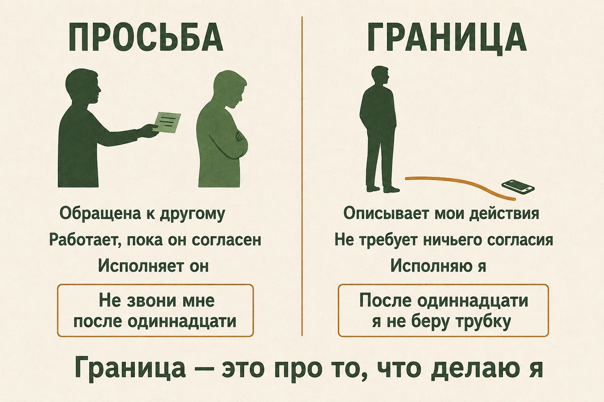
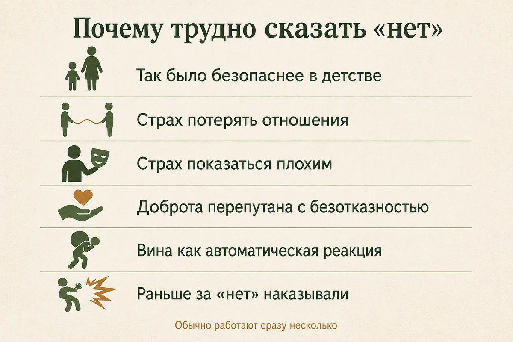
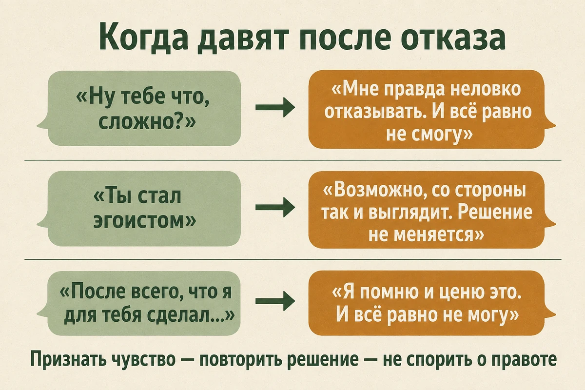
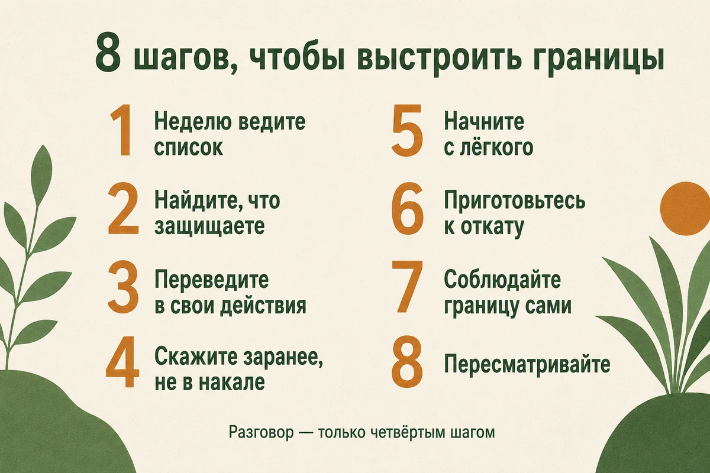

Главная → Блог → Личные границы
Личные границы: 8 шагов, чтобы перестать всем угождать
Обновлено: 29.08.2026 · 17 минут чтения
Вы соглашаетесь, хотя не хотите; отвечаете на сообщения, когда уже нет сил; берёте чужую задачу, а потом злитесь на себя. Личные границы — это не стена и не список правил для окружающих. Граница описывает, что делаете вы, а не что обязан делать другой человек. «Не звони мне после одиннадцати» — просьба: она работает, только пока собеседник согласен. «После одиннадцати я не беру трубку» — граница: она держится вашими действиями и не требует ничьего разрешения. В этом различии причина, по которой большинство попыток «выстроить границы» разваливается за неделю: человек формулирует требование к другому, не получает согласия и делает вывод, что границы не работают. Ниже — как понять, что границ не хватает, как их формулировать, что говорить вместо оправданий и что делать, когда близкие начнут сопротивляться.
- Что такое личные границы (и чем они не являются)
- Как понять, что границ не хватает
- Шесть видов личных границ
- Почему говорить «нет» так трудно
- Граница или ультиматум: в чём разница
- Как сказать «нет»: пять формул
- Что ответить, когда давят
- 8 шагов, чтобы выстроить границы
- Что будет, когда вы начнёте
- Границы в отношениях
- Границы на работе
- Границы с родителями
- Что не работает
- Когда речь уже не о границах
- Когда пора к специалисту
- Частые вопросы
Что такое личные границы (и чем они не являются)
В психологии «границы» — понятие широкое: к ним относят и физическое пространство, и эмоциональную дистанцию, и взаимные договорённости. В практическом смысле, в котором о них говорит эта статья, личная граница — это понимание, где заканчивается ваша ответственность и начинается чужая, и набор действий, которыми вы это понимание поддерживаете. Она отвечает на три вопроса: что для меня приемлемо, что нет и что я сделаю, если черту перейдут.
Обратите внимание на третий пункт — именно его обычно пропускают. Граница без собственного действия остаётся пожеланием. Сравните две фразы: «Пожалуйста, не обсуждай мой вес» и «Если разговор снова свернёт на мой вес, я его закончу и уеду домой». Первая передаёт исполнение другому человеку. Вторая оставляет его вам — и поэтому работает даже с тем, кто не собирается идти навстречу.
Это не значит, что каждая граница обязана заканчиваться словами «иначе я уйду». С людьми, которые вас слышат, она чаще всего остаётся простой договорённостью — «не бери мои вещи без спроса», — и её просто соблюдают. Формулировка через собственное действие нужна там, где договорённость не работает: она показывает, что в этой ситуации остаётся в вашей зоне контроля.
Чем границы не являются:
- Не наказанием. Граница не обязана причинять боль, чтобы считаться настоящей. Её задача — сохранить вас, а не проучить другого.
- Не способом управлять чужим поведением. Вы не можете обязать человека перестать пить, кричать или опаздывать. Вы можете решить, что делаете вы, когда это происходит.
- Не молчаливым отдалением. Тихо сократить общение и ждать, что человек догадается, — не граница, а обида, растянутая во времени.
- Не грубостью. Твёрдость и хамство — разные вещи. Спокойное «не смогу» звучит жёстче, чем длинное раздражённое объяснение, и при этом никого не задевает.
- Не разовым разговором. Границу устанавливает не заявление, а повторяемость: одинаковая реакция на одинаковую ситуацию несколько раз подряд.

Как понять, что границ не хватает
Нехватку границ выдаёт не конфликт, а состояние после общения. Злость в моменте бывает у всех; хроническая усталость и обида после общения часто говорят о том, что вы регулярно соглашаетесь на большее, чем готовы дать. У усталости бывают десятки причин, но если она привязана к конкретным людям и ситуациям, границы стоит проверить в первую очередь.
- Вы соглашаетесь раньше, чем успеваете подумать, а злитесь потом — на себя или на попросившего.
- После разговоров с определённым человеком вы чувствуете себя опустошённым и не можете объяснить почему.
- Вы знаете о делах и настроении окружающих больше, чем о собственных планах на неделю.
- Отказ вызывает чувство вины, будто вы совершили проступок, а не просто не смогли помочь.
- Вы много объясняете и оправдываетесь там, где хватило бы одного слова.
- Копится ощущение, что вас используют, — но назвать конкретный эпизод трудно, потому что каждый по отдельности мелкий.
- Отдых воспринимается как то, что нужно заслужить, и вы регулярно доходите до эмоционального выгорания.
Полезный ориентир: обида — это счёт, который вы не выставили вовремя. Это метафора, а не правило, но она хорошо описывает частый случай: там, где регулярно копится обида, обычно проходит граница, о которой вы не сказали вслух. Поэтому первый практический шаг ниже — не разговор с кем-то, а неделя наблюдения за собой.
Шесть видов личных границ
Границы редко проседают везде сразу. Обычно человек уверенно защищает одну область и совсем не замечает другую — например, легко отказывает в деньгах, но не может прекратить разговор, который его ранит.
| Вид | Как выглядит нарушение | Как звучит граница |
|---|---|---|
| Физические | Обнимают без спроса, входят без стука, берут вещи | «Я не обнимаюсь при встрече, давай пожмём руки» |
| Эмоциональные | Обесценивают чувства, сваливают свои переживания как на дежурного слушателя | «Я не могу быть твоим единственным собеседником по этой теме» |
| Временные | Ждут ответа круглосуточно, назначают дела без согласования | «После семи я не отвечаю по работе, отвечу утром» |
| Материальные | Занимают и не возвращают, распоряжаются вашими деньгами | «Я не даю в долг, но могу помочь другим способом» |
| Цифровые | Читают переписку, требуют геолокацию, звонят видеозвонком без предупреждения | «Я не даю доступ к телефону — это не про доверие» |
| Ценностные | Высмеивают важное для вас, требуют участия в том, что противоречит вашим убеждениям | «Я эту тему не обсуждаю, давай о другом» |
Пройдитесь по таблице и отметьте, где у вас тоньше всего. Работать имеет смысл именно с этой строкой: там результат заметен быстрее, чем в попытке «поставить границы вообще».
Почему говорить «нет» так трудно
Безотказность почти никогда не про слабый характер. У неё есть понятная история.
- Так было безопаснее в детстве. Если в семье удобство ребёнка ценилось выше его желаний, а отказ читался как грубость или предательство, привычка соглашаться становится способом сохранить отношения. Подробнее — в разборе детских травм и их следов во взрослой жизни.
- Страх потерять отношения. В основе лежит убеждение «меня любят, пока я удобен». Пока оно не проверено, каждое «нет» ощущается как риск остаться одному.
- Страх показаться плохим человеком. Внутри звучит не «я боюсь отказать», а «если я откажу, я плохой». Отказ перестаёт быть решением по конкретному поводу и превращается в вопрос о вашей личности — поэтому и кажется, что на кону несоизмеримо больше, чем есть на самом деле.
- Доброта перепутана с безотказностью. Это разные вещи: доброта — про то, что вы даёте по своей воле, безотказность — про то, что вы не умеете не давать.
- Вина как автоматическая реакция. Отказ вызывает не сожаление о поступке, а ощущение себя плохим человеком — то есть вину, не соответствующую реальному вреду от отказа.
- Опыт отношений, где границы наказывались. Если раньше любое «нет» оборачивалось скандалом или обиженным молчанием, психика делает разумный вывод: дешевле согласиться. Такое часто остаётся после токсичных отношений.
Понимание причины не отменяет необходимости действовать, но снимает лишний слой самокритики: вы не «тряпка», у вас просто хорошо натренирован один навык и не натренирован другой.

Граница или ультиматум: в чём разница
Самое частое возражение против границ звучит так: «это же манипуляция, только с другой стороны». Оно справедливо ровно тогда, когда под видом границы предъявляют ультиматум. Разница видна по нескольким признакам.
| Признак | Граница | Ультиматум |
|---|---|---|
| О ком речь | О моих действиях: «я не буду участвовать» | О чужих: «ты должен перестать» |
| Когда сообщается | Заранее, спокойно | В накале, как угроза |
| Кто исполняет | Я сам | Другой человек, под моим контролем |
| Цель | Сохранить себя и по возможности отношения | Добиться нужного поведения |
| Если не послушали | Я делаю то, о чём предупредил | Наказание, обида, эскалация |
| Как воспринимается | Как информация | Как давление |
Отсюда практическое правило: не объявляйте границу, которую не готовы исполнить. Невыполненное «тогда я уйду» обучает окружающих не воспринимать ваши слова всерьёз, и следующая попытка обойдётся дороже.
Как сказать «нет»: пять формул
Отказ — навык, а не черта характера. Он тренируется как любой другой, и у него есть заготовки, которые снимают необходимость выдумывать слова в неудобный момент.
- Возьмите паузу. «Мне нужно подумать, отвечу завтра». Пауза разрывает автоматическое «да» — а именно оно, а не сама просьба, чаще всего оказывается источником последующей обиды. В большинстве бытовых просьб вы не обязаны отвечать сразу, даже если собеседник торопит. Исключения понятны — форс-мажор на работе, вопрос безопасности, уже данное обещание, — но их заметно меньше, чем кажется в момент разговора.
- Откажите коротко и без оправданий. «Не смогу» или «я в этом не участвую». Развёрнутое объяснение выглядит вежливее, но чем больше причин вы называете, тем больше появляется деталей, которые можно обсуждать: «а если подстроиться под другой день?» Объяснение само по себе не вредно — мешает длинное оправдание там, где вас о нём не просили.
- Признайте чувство, не меняя решения. «Понимаю, что это неудобно, и всё равно не смогу». Вы не спорите о том, кто прав, и не оправдываетесь — вы отделяете чужое разочарование от своего решения. Первое реально, второе остаётся вашим.
- Предложите не больше одной альтернативы. «С переездом помочь не смогу, но найду грузчиков». Три варианта подряд читаются как готовность прогнуться и запускают торг.
- Повторяйте одно и то же. Если давят, не ищите новых доводов — спокойно повторите ту же фразу. Приём известен как «заезженная пластинка»: он не даёт разговору превратиться в спор о справедливости, где выигрывает тот, кто настойчивее.
Эти формулы — часть навыка, который в психологии называют ассертивностью: умения говорить о своих потребностях прямо и при этом не нападая. Ассертивность отличается и от пассивности, где вы молчите и копите обиду, и от агрессии, где вы добиваетесь своего ценой отношений: человек прямо говорит о своих потребностях, не подавляя другого и не отказываясь от собственных интересов. Это навык, а не свойство характера, и его обучаемость проверяли в исследованиях — систематический обзор программ тренинга ассертивной коммуникации нашёл улучшение навыка, хотя устойчивость эффекта зависит от программы.
Что ответить, когда давят
Отказ редко заканчивается на первом «нет» — обычно за ним идёт вторая попытка. Заранее заготовленный ответ здесь важнее убедительности: он экономит те несколько секунд, за которые обычно и происходит привычное «ладно, хорошо».
— Ну тебе что, сложно?
«Мне правда неловко отказывать. И всё равно не смогу».
— Ты стал эгоистом.
«Возможно, со стороны так и выглядит. Решение от этого не меняется».
— После всего, что я для тебя сделал…
«Я помню и ценю это. И всё равно не могу согласиться».
— Ты меня совсем не любишь.
«Люблю. И этот вопрос мы решаем отдельно от того, люблю я тебя или нет».
Общее у всех четырёх ответов одно: сначала признаётся чувство собеседника, потом повторяется решение — и ни в одном нет спора о том, кто прав. Спор о правоте выигрывает тот, кто дольше не уступает, и это редко вы.

Готовые фразы
| Ситуация | Что можно сказать |
|---|---|
| Просят в долг | «Я не даю деньги в долг — это моё общее правило, не про тебя» |
| Коллега передаёт свою задачу | «Сейчас не смогу взять ещё одну. Давай спросим руководителя, что подвинуть» |
| Родители расспрашивают о личном | «Я понимаю ваш интерес, но эту тему обсуждать не буду» |
| Собеседник повышает голос | «Я продолжу разговор, когда мы оба будем говорить спокойно» |
| Требуют ответить немедленно | «Сейчас не отвечу. Вернусь с ответом завтра до обеда» |
| Просят доступ к переписке | «Я не показываю свои сообщения. Это не про доверие» |
| Зовут туда, куда не хочется | «В этот раз не пойду. Спасибо, что позвал» |
Фразы стоит проговорить вслух заранее — хотя бы один раз. В спокойной обстановке они звучат естественно, а в разговоре, где вы волнуетесь, всплывает то, что уже было сказано голосом, а не только прочитано.
8 шагов, чтобы выстроить границы
- Неделю ведите список. Записывайте ситуации, после которых остаётся тяжесть, обида или усталость: кто, что, что вы почувствовали. Границы удобнее строить на фактах, чем на общем ощущении, что «все на мне ездят».
- Найдите, что именно вы защищаете. За каждой границей стоит ценность: время с семьёй, здоровье, покой, профессиональная репутация. Формулировка через ценность («мне важно ужинать дома») держится лучше, чем через раздражение («меня достали переработки»). Это ход из терапии принятия и ответственности (ACT), где действия сверяют с ценностями, а не с настроением.
- Переведите границу в свои действия. Возьмите то, что хочется потребовать от другого, и перепишите как то, что сделаете вы. Не «перестань писать по работе в выходные», а «в выходные я не открываю рабочий чат».
- Скажите заранее, а не в накале. Спокойный разговор до ситуации воспринимается как информация, тот же текст во время ссоры — как атака. Лучший момент для границы тот, когда всё в порядке.
- Начните с лёгкого. Не с матери и не с начальника, а там, где цена отказа мала: не брать необязательную задачу, не отвечать на сообщение сию секунду, отказаться от встречи, на которую не хочется. Навык нужно поставить на низких ставках, иначе первая же неудача убедит вас, что «это не работает».
- Приготовьтесь к откату. Когда привычная реакция вдруг перестаёт срабатывать, человек нередко усиливает нажим: чаще повторяет просьбу, спорит, пытается вернуть прежний порядок общения. Так бывает не всегда, и само по себе это не значит, что граница поставлена неправильно. Обычно, если не менять поведение, нажим постепенно спадает.
- Соблюдайте границу сами. Если сегодня правило действует, а завтра вы отвечаете на рабочее сообщение в полночь, окружающим просто непонятно, чего от них ждут. Границу подрывает не чужая наглость, а собственная непоследовательность.
- Пересматривайте. Граница не догма: с близким другом в тяжёлый период правила могут быть одни, в обычное время другие. Осознанное исключение отличается от прогиба тем, что вы приняли его сами и знаете, когда оно закончится.

Знаете, какую границу хотите поставить, но не знаете, как сказать это без грубости и без оправданий? Разговор можно отрепетировать заранее — тепло, анонимно и без осуждения. ИИ-психолог поможет разобраться, что именно вы хотите сказать, и подобрать спокойную формулировку под вашу ситуацию.
Начать разговор бесплатноЧто будет, когда вы начнёте
Реакция бывает разной: часть людей принимает новые правила спокойно, и это не значит, что раньше вы всё делали неправильно. Но недовольство встречается часто — особенно у тех, кому была удобна ваша прежняя уступчивость. К нему стоит подготовиться заранее, чтобы не принять его за доказательство своей неправоты.
- «Ты изменился». Да. Это констатация, а не обвинение, хотя звучит как упрёк.
- «Ты стал эгоистом». Граница не становится эгоизмом оттого, что кому-то она неудобна: отказ подвезти в аэропорт создаёт человеку реальную сложность, и всё же это не эгоизм. Разница в другом — считаетесь ли вы с его интересами и признаёте ли за ним право решать за себя.
- Обиженное молчание. Способ вернуть прежний порядок без прямого разговора. Работает, только если вы броситесь исправлять чужое настроение.
- Проверки. Ту же просьбу повторят через неделю в чуть изменённом виде — не из вредности, а потому что раньше это всегда срабатывало.
Через несколько повторений давление обычно спадает: люди перестраиваются под новые правила быстрее, чем кажется. Но честно будет сказать и другое: часть связей это не переживёт. Отношения, которые держались исключительно на вашей безотказности, при появлении границ действительно заканчиваются — и это не потеря отношений, а обнаружение того, чем они были. Здоровая связь переживает ваше «нет», пусть и с недовольством.
Границы в отношениях
В паре границы устроены труднее всего: близость предполагает, что многое общее, и любое «это моё» легко прочитывается как отдаление. Помогает разделять два разных вопроса — что у нас общее и что остаётся личным даже в очень близких отношениях.
- Личное время не требует обоснования. Вечер с друзьями или час в одиночестве — не изъятое у партнёра время, а часть нормального устройства жизни.
- Телефон и переписка. Отказ показывать сообщения — не признание в чём-то, а граница. Требование доступа «если тебе нечего скрывать» переворачивает логику: доверие проверяется поведением, а не проверками.
- Право на своё мнение о родне и друзьях. Можно не любить чью-то компанию и при этом не запрещать её и не быть обязанным в ней участвовать.
- Секс и близость. Согласие не выдаётся один раз и навсегда: «не сегодня» — полноценный ответ, который не нужно защищать аргументами.
- Разговор о границе — не начало разрыва. Формулировка «мне важно, чтобы…» работает лучше, чем «ты вечно…»: первая говорит о вас, вторая начинает спор о фактах.
Разница между здоровым несогласием и тревожным сигналом видна по тому, что происходит после разговора: становится яснее и спокойнее — или вы снова оказываетесь виноватым. Второе — повод присмотреться к признакам токсичных отношений.
Границы на работе
На работе прямое «нет» часто невозможно: есть субординация и реальная зависимость от зарплаты. Зато работает язык приоритетов — вы не отказываетесь, а показываете цену.
- Вместо отказа — выбор. «Могу взять задачу, если сдвинем отчёт на пятницу. Что важнее?» Решение принимает руководитель, но выбирает он между двумя реальными вариантами, а не между «сделать» и «отказаться».
- Фиксируйте договорённости письменно. Устная просьба «просто посмотри, это на пять минут» превращается в полноценную задачу незаметно; письмо делает объём видимым.
- Отделяйте срочное от привычного. Аврал раз в квартал — нормальная часть работы. Аврал каждую неделю — способ организации труда за ваш счёт и прямой путь к хроническому стрессу на работе.
- Договоритесь о времени связи. Не «я не буду отвечать вечером», а «вечером я отвечаю только на срочное, и вот что мы считаем срочным».
Если после нескольких попыток договориться ничего не меняется, это сигнал не о ваших навыках, а о среде. Стойкое ощущение, что вы вкладываетесь и не восстанавливаетесь, стоит проверить опросником выгорания CBI: он помогает оценить выраженность признаков выгорания и увидеть, связано истощение больше с работой или с общим состоянием. Опросник не заменяет оценку специалиста.
Границы с родителями
Это самая трудная категория: мешает не только страх конфликта, но и благодарность, жалость и груз общей истории. Несколько ориентиров.
- Не спорьте о прошлом. Разговор «вы неправильно меня воспитывали» почти никогда не приводит к признанию, зато надёжно уводит от темы. Границу ставят на сегодняшнее поведение: «эту тему я обсуждать не буду».
- Определите конкретный вклад. Сколько звонков, визитов и помощи вы реально готовы давать — и считайте этот объём достаточным. Долг без края невозможно закрыть, и именно он производит бесконечную вину.
- Не ждите разрешения. Взрослому человеку не нужно согласие родителей, чтобы жить по своим правилам. Ждать одобрения — значит бессрочно откладывать собственную жизнь.
- Отделяйте заботу от подчинения. Можно быть внимательным сыном или дочерью и при этом не отвечать за родительское настроение, одиночество и несбывшиеся ожидания.
Что не работает
- Объяснять до победного. Если человек не принимает короткое «нет», он не примет и подробное — просто получит больше материала для спора.
- Ждать, пока догадаются. Намёки, вздохи и демонстративная усталость не считаются сообщением. Никто не обязан читать ваши мысли, даже самый близкий.
- Ставить границу в ссоре. В накале любое условие звучит как угроза, и обсуждать будут тон, а не суть.
- Резко переходить от безотказности к жёсткости. Годы «да», а потом внезапное холодное «нет» без предупреждения читается как наказание. Лучше двигаться мелкими шагами и предупреждать заранее.
- Использовать границы как оружие. «Я имею право на личные границы» в ответ на любую просьбу — это не границы, а способ не считаться с другими.
- Требовать признания правоты. Цель границы — изменить положение дел, а не выиграть спор. Согласие собеседника приятно, но необязательно.
Когда речь уже не о границах
Есть ситуации, в которых совет «спокойно обозначьте границу» не просто бесполезен, а опасен. Если в ответ на любое несогласие следуют угрозы, если вас изолируют от друзей и родных, контролируют переписку и передвижения, лишают доступа к деньгам или применяют силу — это не проблема коммуникации. Это систематический контроль, и он не решается удачной формулировкой: прямое сопротивление в таких отношениях нередко повышает риск.
Здесь порядок другой: сначала безопасность и внешняя поддержка, потом всё остальное. Признаки, по которым отличают трудный период от разрушительных отношений, разобраны в статье о токсичных отношениях.
Когда пора к специалисту
Самостоятельной работы обычно достаточно, если трудность в навыке. К специалисту стоит обратиться, когда дело не в словах:
- любая мысль об отказе вызывает сильную тревогу, дрожь или тошноту — тело реагирует раньше, чем вы успеваете подумать;
- границы держатся несколько дней и рушатся при первом же давлении, и так по кругу;
- за безотказностью стоит убеждение «я имею значение, только пока полезен» — с такими глубокими установками работает схема-терапия;
- отказ сопровождается острой самокритикой, с которой хорошо справляется терапия, сфокусированная на сострадании;
- привычка сложилась в семье, где ваши потребности не считались, — тогда точка приложения не «нет», а сам этот опыт;
- вместе с трудностью отказывать держатся подавленность, апатия и бессонница неделями.
Пошаговую работу с автоматическими мыслями вроде «если я откажу, меня разлюбят» ведут в когнитивно-поведенческой терапии: убеждение проверяют на фактах, а не переспоривают.
Частые вопросы
Чем личные границы отличаются от эгоизма?
Граница не становится эгоизмом оттого, что кому-то она неудобна: отказ подвезти в аэропорт создаёт человеку реальную сложность, и всё же это не эгоизм. Разница в другом — считаетесь ли вы с интересами другого и признаёте ли за ним право самому принимать решения, или просто перестали его замечать. Эгоизм — это добиваться своего за чужой счёт; граница — отказ действовать за свой счёт. Обвинение в эгоизме чаще всего звучит от того, кому было удобно ваше прежнее «да».
Как обозначить границы, если человек их не слышит?
Перестаньте объяснять и начните действовать. Граница держится не согласием собеседника, а вашей собственной реакцией: не отвечать на звонок в оговорённое время, закончить разговор, уехать, не давать в долг. Сообщите заранее, что именно вы сделаете, а потом сделайте это спокойно и без объявлений. Человек, который не слышит слов, обычно замечает изменившиеся последствия.
Как сказать «нет» начальнику и не потерять работу?
Говорите не об отказе, а о приоритетах: «Могу взять задачу, если сдвинем отчёт на пятницу. Что важнее?» Так решение остаётся за руководителем, но выбирает он между двумя реальными вариантами, а не между «сделать» и «не сделать». Договорённости фиксируйте письменно — устные просьбы «на пять минут» незаметно превращаются в полноценные задачи. Если после нескольких попыток ничего не меняется, вопрос уже не в ваших формулировках, а в устройстве работы.
Почему после отказа я чувствую вину?
Вина за отказ обычно означает не то, что вы поступили плохо, а то, что вы не привыкли иметь право на «нет». Разделите два разных факта: человеку может быть неприятно ваше решение — и при этом вы не причинили ему вреда. Отказ без грубости не является проступком, а чужое разочарование не автоматически ваша ответственность. Со временем вина слабеет, но не с первого раза: она держится на привычке, а привычки меняются повторением.
Что делать, если границы нарушают родители?
Ставьте границу на сегодняшнее поведение, а не на прошлое: «эту тему я обсуждать не буду» работает, а спор о том, правильно ли вас воспитывали, почти никогда. Определите конкретный и выполнимый вклад — сколько звонков, визитов и помощи вы реально готовы давать — и считайте этот объём достаточным. Разрешения родителей на собственные правила взрослому человеку не требуется, и ждать одобрения означает бессрочно откладывать свою жизнь.
Можно ли выстроить границы в отношениях с абьюзером?
Обычные приёмы там не работают и могут быть опасны: в отношениях, построенных на контроле, ваше «нет» воспринимается как вызов власти, и прямое сопротивление часто усиливает давление. Если есть угрозы, применение силы, изоляция от близких или контроль над деньгами, задача другая — безопасность и внешняя поддержка, а не удачная формулировка. Начинать стоит с разговора со специалистом или со службой помощи, а не с объяснения границ человеку, который их системно не признаёт.
Читать также
- Токсичные отношения: 12 признаков и как из них выйти — если границы нарушают систематически.
- Постоянное чувство вины: 7 шагов, чтобы перестать себя грызть — если каждое «нет» отзывается виной.
- Как повысить самооценку: 8 шагов, которые реально работают — защищать своё легче, когда считаешь его ценным.
- Эмоциональное выгорание: 12 признаков и как восстановиться — чем заканчивается безотказность на работе.
- Детские травмы: 7 следов во взрослой жизни — откуда чаще всего растёт привычка угождать.
Материал подготовлен командой AI Therapist и основан на доказательных подходах — тренинге ассертивности, когнитивно-поведенческой терапии (КПТ), терапии принятия и ответственности (ACT) и терапии, сфокусированной на сострадании (CFT). Статья носит просветительский характер и не заменяет консультацию специалиста.
Источники: Better Health Channel (Департамент здравоохранения штата Виктория, Австралия) — ассертивность: чем она отличается от пассивности и агрессии, APA Dictionary of Psychology — определение границы, NHS — гнев: почему возникает и что с ним делать, ВОЗ — насилие в отношении женщин, Omura et al., International Journal of Nursing Studies, 2017 — систематический обзор эффективности тренингов ассертивной коммуникации, Национальный исследовательский центр условий труда Дании — официальное описание опросника CBI. Источники проверены 29.08.2026.
Кто отвечает за содержание сайта и по каким правилам мы готовим материалы — на странице о проекте.